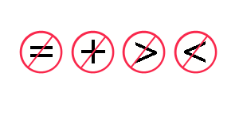

|
Development |

|
|
String Functions and Arrays of Strings Apply structured programming principles, including single-dimensional arrays, when writing program code Functions | Array of Strings | In-Class Practice | Exercises Array names alone refer to addresses rather than the values stored in the array elements. Accordingly, we cannot apply the operators that we use with numeric values to strings.  Instead, we use library functions to perform assignments, comparisons and concatenation.Functions The string library <string.h> contains the functions for string manipulation. These functions include
To use any of these functions, we include their prototypes
strlen The prototype for the string length function is unsigned int strlen(char []);strlen returns the number of characters in the string excluding the null byte terminator. In other wordss, strlen returns the index of the null byte. For example,
strcpy The prototype for the string copy function is char* strcpy(char destination[], char source[]);strcpy copies source into destination and returns the address of destination. It is our responsibility to ensure that there is sufficient space in destination to hold all of the characters in source. For example,
strcmp The prototype for the string comparison function is int strcmp(char source1[], char source2[]); strcmp returns 0 if the strings are identical, a negative value if the first non-matching character in the first string is lower than the character with the same index in the second string under the collating sequence used by the computer. For example,
strcat The prototype for the string concatenation function is char* strcat(char destination[], char source[]); strcat appends source to destination and returns the address of destination. It is our responsibility to ensure that there is sufficient space in destination to include both the original string and the appended source. For example,
Arrays of Strings We can create an array of strings in the same way that we create an array of ints. We declare an array of ints by following the identifier with a pair of square brackets. We insert the number of array elements between the brackets. Similarily, we declare an array of strings by following the identifier with a pair of square brackets. We insert the number of strings in the array between the brackets. In other words, an array of strings is just an array of 'arrays of characters'. A string array declaration takes the form char identifier[NO_OF_STRINGS][NO_OF_BYTES_PER_STRING];For example, to declare an array of 5 names, where each name holds up to 30 characters, we write
A string array declaration with an initialization takes the form
char identifier[NO_OF_STRINGS][NO_OF_BYTES_PER_STRING] = {
"string value 1", "string value 2", ... };
For example,
We locate a string within an array of strings by following the name of the array with a single pair of brackets and placing the string index within those brackets. For example, the second string in the array name is
For example, the third character within the second string is
Input and Output The address of a string in an array of strings is identifer[string index]For example, the third name in the list of names is
printf("%s", name[2] );
To accept user input for a list of 5 names, we write
Passing to Functions To pass an array of strings to a function, we specify the array name as the argument. To receive an array of strings as a function parameter, we use the form dataType functionIdentifier ( dataType identifier[][NO_OF_BYTES_PER_STRING], ... )We must specify the second dimension of the array. For example, to pass the list of names to a function, we write
Sorting an Array of Names Let us write a program that accepts several names and displays them in alphabetic order.
In-Class Practice Try the practice problem in Handout 16. Exercises
|
|
|
Top
|
|
|
Next: Sequential Text Files
|
| Designed by Chris Szalwinski | Copying From This Site |